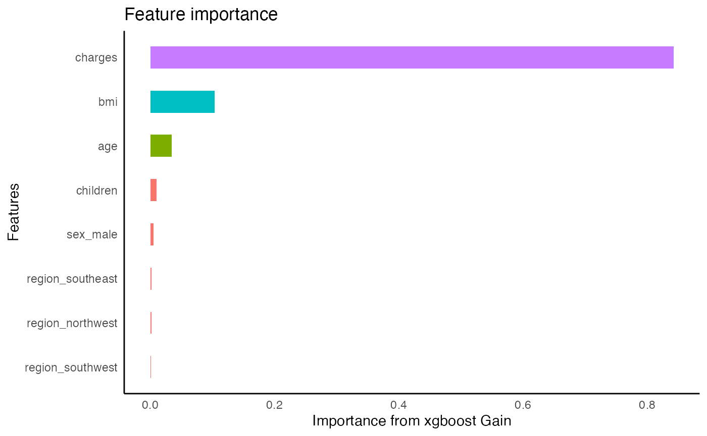

knitr::opts_chunk$set(warning = FALSE, message = FALSE)
library(TidyConsultant)In this vignette we demonstrate how the various packages in the TidyConsultant universe work together in a data science workflow by analyzing insurance data set, which consists of a population of people described by their characteristics and their insurance charge.
data(insurance)
insurance %>%
diagnose()
#> # A tibble: 7 × 6
#> variables types missing_count missing_percent unique_count unique_rate
#> <chr> <chr> <int> <dbl> <int> <dbl>
#> 1 age integer 0 0 47 0.0351
#> 2 sex character 0 0 2 0.00149
#> 3 bmi numeric 0 0 548 0.410
#> 4 children integer 0 0 6 0.00448
#> 5 smoker character 0 0 2 0.00149
#> 6 region character 0 0 4 0.00299
#> 7 charges numeric 0 0 1337 0.999
insurance %>%
diagnose_numeric()
#> # A tibble: 4 × 11
#> variables zeros minus infs min mean max `|x|<1 (ratio)` integer_ratio
#> <chr> <int> <int> <int> <dbl> <dbl> <dbl> <dbl> <dbl>
#> 1 age 0 0 0 18 3.92e1 6.4 e1 0 1
#> 2 bmi 0 0 0 16.0 3.07e1 5.31e1 0 0.0224
#> 3 children 574 0 0 0 1.09e0 5 e0 0.429 1
#> 4 charges 0 0 0 1122. 1.33e4 6.38e4 0 0.000747
#> # ℹ 2 more variables: mode <dbl>, mode_ratio <dbl>
insurance %>%
diagnose_category(everything(), max_distinct = 7) %>%
print(width = Inf)
#> # A tibble: 14 × 4
#> column level n ratio
#> <chr> <chr> <int> <dbl>
#> 1 sex male 676 0.505
#> 2 sex female 662 0.495
#> 3 children 0 574 0.429
#> 4 children 1 324 0.242
#> 5 children 2 240 0.179
#> 6 children 3 157 0.117
#> 7 children 4 25 0.0187
#> 8 children 5 18 0.0135
#> 9 smoker no 1064 0.795
#> 10 smoker yes 274 0.205
#> 11 region southeast 364 0.272
#> 12 region northwest 325 0.243
#> 13 region southwest 325 0.243
#> 14 region northeast 324 0.242We can infer that each row represents a person, uniquely identified by 5 characteristics. The charges column is also unique, but simply because it is a high-precision double.
insurance %>%
determine_distinct(everything())
#> database has 1 duplicate rows, and will eliminate them
insurance %>%
auto_cor(sparse = TRUE) -> cors
cors
#> # A tibble: 20 × 6
#> x y cor p.value significance method
#> <chr> <chr> <dbl> <dbl> <chr> <chr>
#> 1 smoker_no charges -0.787 8.27e-283 *** pearson
#> 2 smoker_yes charges 0.787 8.27e-283 *** pearson
#> 3 charges age 0.299 4.89e- 29 *** pearson
#> 4 region_southeast bmi 0.270 8.71e- 24 *** pearson
#> 5 charges bmi 0.198 2.46e- 13 *** pearson
#> 6 region_northeast bmi -0.138 3.91e- 7 *** pearson
#> 7 region_northwest bmi -0.136 5.94e- 7 *** pearson
#> 8 bmi age 0.109 6.19e- 5 *** pearson
#> 9 smoker_no sex_female 0.0762 5.30e- 3 ** pearson
#> 10 smoker_yes sex_female -0.0762 5.30e- 3 ** pearson
#> 11 smoker_yes sex_male 0.0762 5.30e- 3 ** pearson
#> 12 smoker_no sex_male -0.0762 5.30e- 3 ** pearson
#> 13 region_southeast charges 0.0740 6.78e- 3 ** pearson
#> 14 region_southeast smoker_no -0.0685 1.22e- 2 * pearson
#> 15 region_southeast smoker_yes 0.0685 1.22e- 2 * pearson
#> 16 charges children 0.0680 1.29e- 2 * pearson
#> 17 sex_male charges 0.0573 3.61e- 2 * pearson
#> 18 sex_female charges -0.0573 3.61e- 2 * pearson
#> 19 sex_male bmi 0.0464 9.00e- 2 . pearson
#> 20 sex_female bmi -0.0464 9.00e- 2 . pearsonAnalyze the relationship between categorical and continuous variables
insurance %>%
auto_anova(everything(), baseline = "first_level") -> anovas1
anovas1 %>%
print(n = 50)
#> # A tibble: 32 × 12
#> target predictor level estimate target_mean n std.error level_p.value
#> <chr> <chr> <chr> <dbl> <dbl> <int> <dbl> <dbl>
#> 1 age region (Inter… 3.93e+1 39.3 324 0.781 4.75e-310
#> 2 age region northw… -7.16e-2 39.2 325 1.10 9.48e- 1
#> 3 age region southe… -3.29e-1 38.9 364 1.07 7.59e- 1
#> 4 age region southw… 1.87e-1 39.5 325 1.10 8.66e- 1
#> 5 age sex (Inter… 3.95e+1 39.5 662 0.546 0
#> 6 age sex male -5.86e-1 38.9 676 0.768 4.46e- 1
#> 7 age smoker (Inter… 3.94e+1 39.4 1064 0.431 0
#> 8 age smoker yes -8.71e-1 38.5 274 0.952 3.60e- 1
#> 9 bmi region (Inter… 2.92e+1 29.2 324 0.325 0
#> 10 bmi region northw… 2.63e-2 29.2 325 0.459 9.54e- 1
#> 11 bmi region southe… 4.18e+0 33.4 364 0.447 3.28e- 20
#> 12 bmi region southw… 1.42e+0 30.6 325 0.459 1.99e- 3
#> 13 bmi sex (Inter… 3.04e+1 30.4 662 0.237 0
#> 14 bmi sex male 5.65e-1 30.9 676 0.333 9.00e- 2
#> 15 bmi smoker (Inter… 3.07e+1 30.7 1064 0.187 0
#> 16 bmi smoker yes 5.67e-2 30.7 274 0.413 8.91e- 1
#> 17 charges region (Inter… 1.34e+4 13406. 324 671. 7.67e- 78
#> 18 charges region northw… -9.89e+2 12418. 325 949. 2.97e- 1
#> 19 charges region southe… 1.33e+3 14735. 364 923. 1.50e- 1
#> 20 charges region southw… -1.06e+3 12347. 325 949. 2.64e- 1
#> 21 charges sex (Inter… 1.26e+4 12570. 662 470. 1.63e-126
#> 22 charges sex male 1.39e+3 13957. 676 661. 3.61e- 2
#> 23 charges smoker (Inter… 8.43e+3 8434. 1064 229. 1.58e-205
#> 24 charges smoker yes 2.36e+4 32050. 274 506. 8.27e-283
#> 25 children region (Inter… 1.05e+0 1.05 324 0.0670 1.26e- 50
#> 26 children region northw… 1.01e-1 1.15 325 0.0947 2.84e- 1
#> 27 children region southe… 3.15e-3 1.05 364 0.0921 9.73e- 1
#> 28 children region southw… 9.52e-2 1.14 325 0.0947 3.15e- 1
#> 29 children sex (Inter… 1.07e+0 1.07 662 0.0469 2.66e- 98
#> 30 children sex male 4.14e-2 1.12 676 0.0659 5.30e- 1
#> 31 children smoker (Inter… 1.09e+0 1.09 1064 0.0370 1.25e-147
#> 32 children smoker yes 2.29e-2 1.11 274 0.0817 7.79e- 1
#> # ℹ 4 more variables: level_significance <chr>, predictor_p.value <dbl>,
#> # predictor_significance <chr>, conclusion <chr>Use the sparse option to show only the most significant effects
insurance %>%
auto_anova(everything(), baseline = "first_level", sparse = T, pval_thresh = .1) -> anovas2
anovas2 %>%
print(n = 50)
#> # A tibble: 5 × 8
#> target predictor level estimate target_mean n level_p.value
#> <chr> <chr> <chr> <dbl> <dbl> <int> <dbl>
#> 1 bmi region southeast 4.18 33.4 364 3.28e- 20
#> 2 bmi region southwest 1.42 30.6 325 1.99e- 3
#> 3 bmi sex male 0.565 30.9 676 9.00e- 2
#> 4 charges sex male 1387. 13957. 676 3.61e- 2
#> 5 charges smoker yes 23616. 32050. 274 8.27e-283
#> # ℹ 1 more variable: level_significance <chr>From this we can conclude that smokers and males incur higher insurance charges. It may be beneficial to explore some interaction effects, considering that BMI’s effect on charges will be sex-dependent.
insurance %>%
create_dummies(remove_most_frequent_dummy = T) -> insurance1
insurance1 %>%
tidy_formula(target = charges) -> charges_form
charges_form
#> charges ~ age + bmi + children + sex_female + smoker_yes + region_northeast +
#> region_northwest + region_southwest
#> <environment: 0x1529d6528>
insurance1 %>%
auto_variable_contributions(formula = charges_form)
insurance1 %>%
bin_cols(charges) -> insurance_bins
insurance_bins
#> # A tibble: 1,338 × 10
#> charges_fr10 age bmi children charges sex_female smoker_yes
#> <int> <int> <dbl> <int> <dbl> <int> <int>
#> 1 8 19 27.9 0 16885. 1 1
#> 2 1 18 33.8 1 1726. 0 0
#> 3 3 28 33 3 4449. 0 0
#> 4 9 33 22.7 0 21984. 0 0
#> 5 2 32 28.9 0 3867. 0 0
#> 6 2 31 25.7 0 3757. 1 0
#> 7 5 46 33.4 1 8241. 1 0
#> 8 4 37 27.7 3 7282. 1 0
#> 9 4 37 29.8 2 6406. 0 0
#> 10 9 60 25.8 0 28923. 1 0
#> # ℹ 1,328 more rows
#> # ℹ 3 more variables: region_northeast <int>, region_northwest <int>,
#> # region_southwest <int>Here we can see a summary of the binned cols. The with quintile “value” bins we can see that the top 20% of charges comes from the top x people.
insurance_bins %>%
bin_summary()
#> # A tibble: 10 × 14
#> column method n_bins .rank .min .mean .max .count .uniques
#> <chr> <chr> <int> <int> <dbl> <dbl> <dbl> <int> <int>
#> 1 charges equal freq 10 10 34806. 42267. 63770. 136 136
#> 2 charges equal freq 10 9 20421. 26063. 34780. 130 130
#> 3 charges equal freq 10 8 13823. 16757. 20297. 135 135
#> 4 charges equal freq 10 7 11412. 12464. 13770. 134 134
#> 5 charges equal freq 10 6 9386. 10416. 11397. 134 134
#> 6 charges equal freq 10 5 7372. 8386. 9378. 134 134
#> 7 charges equal freq 10 4 5484. 6521. 7358. 134 134
#> 8 charges equal freq 10 3 3994. 4752. 5478. 133 133
#> 9 charges equal freq 10 2 2353. 3140. 3990. 134 134
#> 10 charges equal freq 10 1 1122. 1797. 2332. 134 133
#> # ℹ 5 more variables: relative_value <dbl>, .sum <dbl>, .med <dbl>, .sd <dbl>,
#> # width <dbl>Let’s see if we can predict whether a customer is a smoker.
Xgboost considers the first level of a factor to be the “positive
event” so let’s ensure that “yes” is the first level using
framecleaner::set_fct
insurance %>%
set_fct(smoker, first_level = "yes") -> insurance
insurance %>%
create_dummies(where(is.character), remove_first_dummy = T) -> insurance_dummies
insurance_dummies %>%
diagnose
#> # A tibble: 9 × 6
#> variables types missing_count missing_percent unique_count unique_rate
#> <chr> <chr> <int> <dbl> <int> <dbl>
#> 1 age integ… 0 0 47 0.0351
#> 2 bmi numer… 0 0 548 0.410
#> 3 children integ… 0 0 6 0.00448
#> 4 smoker factor 0 0 2 0.00149
#> 5 charges numer… 0 0 1337 0.999
#> 6 sex_male integ… 0 0 2 0.00149
#> 7 region_northwest integ… 0 0 2 0.00149
#> 8 region_southeast integ… 0 0 2 0.00149
#> 9 region_southwest integ… 0 0 2 0.00149And create a new formula for the binary classification.
insurance_dummies %>%
tidy_formula(target = smoker) -> smoker_form
smoker_form
#> smoker ~ age + bmi + children + charges + sex_male + region_northwest +
#> region_southeast + region_southwest
#> <environment: 0x147c2af98>Now we can create a basic model using tidy_xgboost.
Built in heuristic will automatically recognize this as a binary
classification task. We can tweak some parameters to add some
regularization and increase the number of trees. Xgboost will
automatically output feature importance on the training set, and a
measure of accuracy tested on a validation set.
insurance_dummies %>%
tidy_xgboost(formula = smoker_form,
mtry = .5,
trees = 100L,
loss_reduction = 1,
alpha = .1,
sample_size = .7) -> smoker_xgb_classif#> # A tibble: 15 × 3
#> .metric .estimate .formula
#> <chr> <dbl> <chr>
#> 1 accuracy 0.937 TP + TN / total
#> 2 kap 0.804 NA
#> 3 sens 0.833 TP / actually P
#> 4 spec 0.964 TN / actually N
#> 5 ppv 0.854 TP / predicted P
#> 6 npv 0.958 TN / predicted N
#> 7 mcc 0.804 NA
#> 8 j_index 0.796 NA
#> 9 bal_accuracy 0.898 sens + spec / 2
#> 10 detection_prevalence 0.197 predicted P / total
#> 11 precision 0.854 PPV, 1-FDR
#> 12 recall 0.833 sens, TPR
#> 13 f_meas 0.843 HM(ppv, sens)
#> 14 baseline_accuracy 0.798 majority class / total
#> 15 roc_auc 0.984 NA
Obtain predictions
smoker_xgb_classif %>%
tidy_predict(newdata = insurance_dummies, form = smoker_form) -> insurance_fitAnalyze the probabilities using tidybins. We can find the top 20% of customers most likely to be smokers.
names(insurance_fit)[length(names(insurance_fit)) - 1] -> prob_preds
insurance_fit %>%
bin_cols(prob_preds, n_bins = 5) -> insurance_fit1
insurance_fit1 %>%
bin_summary()
#> # A tibble: 5 × 14
#> column method n_bins .rank .min .mean .max .count .uniques
#> <chr> <chr> <int> <int> <dbl> <dbl> <dbl> <int> <int>
#> 1 smoker_preds_prob… equal… 5 5 0.654 0.918 0.989 268 267
#> 2 smoker_preds_prob… equal… 5 4 0.00767 0.100 0.646 267 254
#> 3 smoker_preds_prob… equal… 5 3 0.00603 0.00669 0.00767 268 229
#> 4 smoker_preds_prob… equal… 5 2 0.00521 0.00558 0.00602 269 229
#> 5 smoker_preds_prob… equal… 5 1 0.00460 0.00494 0.00521 266 179
#> # ℹ 5 more variables: relative_value <dbl>, .sum <dbl>, .med <dbl>, .sd <dbl>,
#> # width <dbl>Evaluate the training error. eval_preds uses both the
probability estimates and binary estimates to calculate a variety of
metrics.
insurance_fit1 %>%
eval_preds()
#> # A tibble: 4 × 5
#> .metric .estimator .estimate model target
#> <chr> <chr> <dbl> <chr> <chr>
#> 1 accuracy binary 0.987 smoker_xgb_classif smoker
#> 2 f_meas binary 0.968 smoker_xgb_classif smoker
#> 3 precision binary 0.941 smoker_xgb_classif smoker
#> 4 roc_auc binary 0.999 smoker_xgb_classif smokerTraditional yardstick confusion matrix can be created
manually.